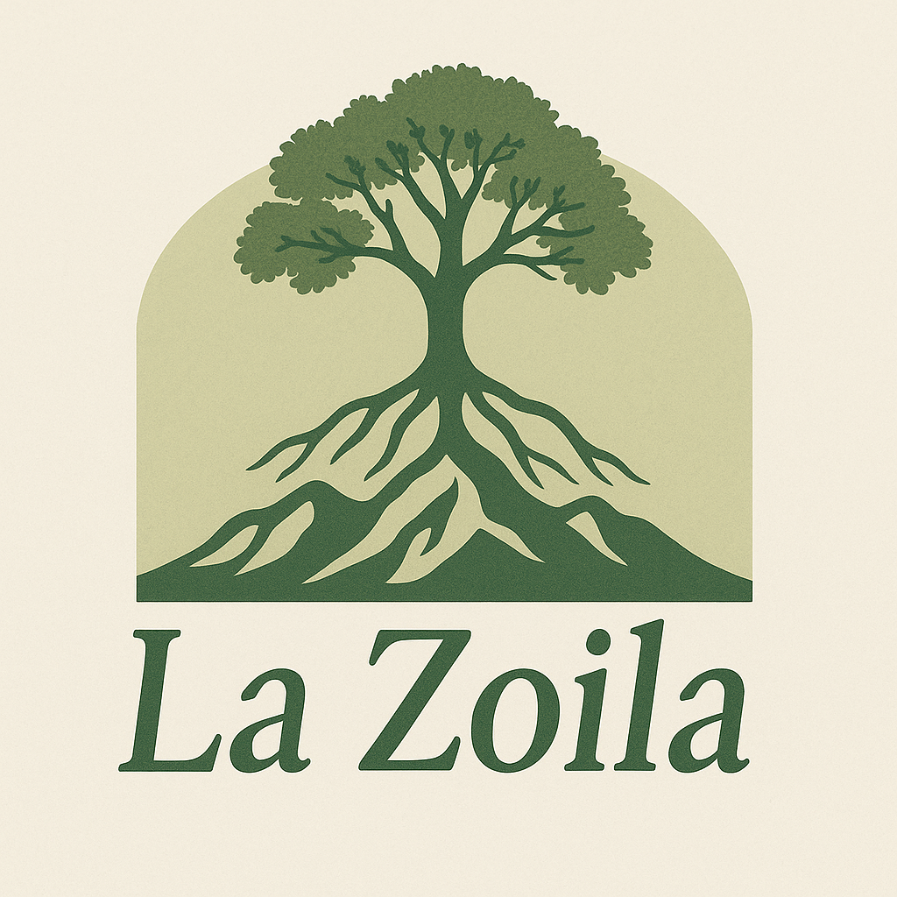
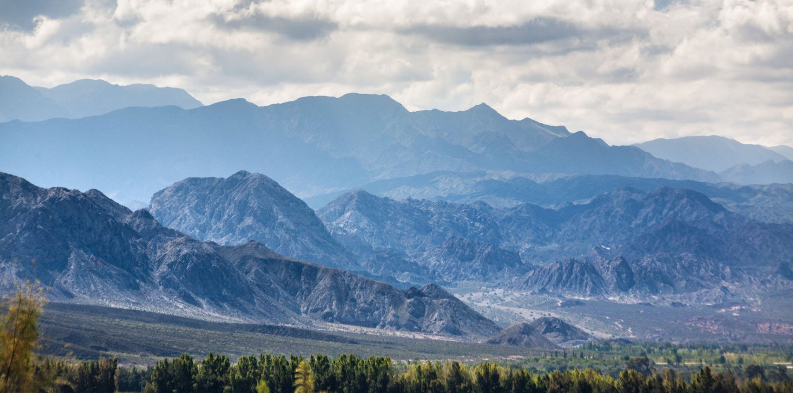
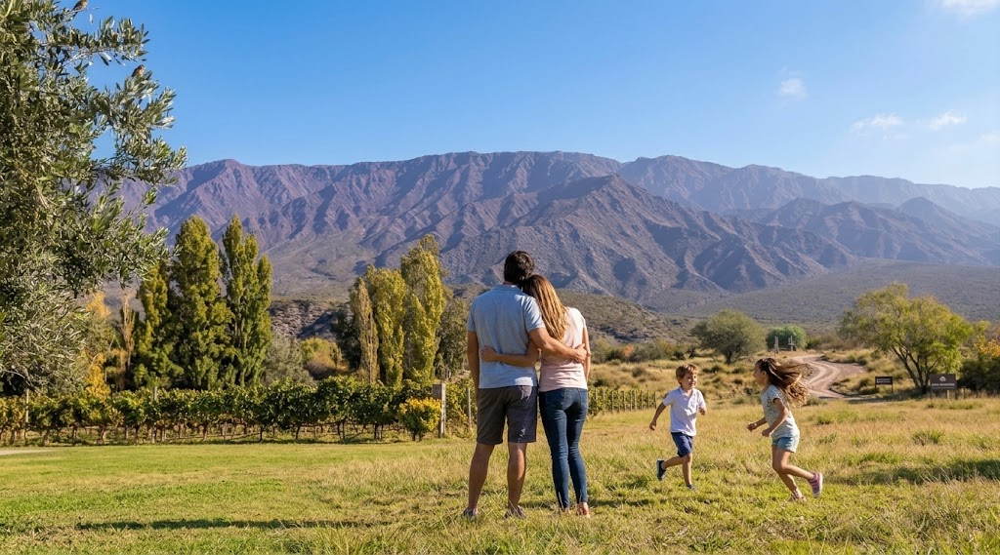

Espacio para vivir mejor
Lotes amplios para una casa comoda, jardin, pileta, quincho y vida exterior.

La Zoila Consultar WhatsAppBarrio privado en Zonda, San Juan
Lotes de 1.000 m2, servicios, escritura y precio contado desde USD 25.000.
Pocos lotes disponibles.
Zonda listo para construir
La Zoila combina espacio, paisaje y una propuesta clara para quienes buscan construir, invertir o proyectar una proxima etapa en San Juan.
Lotes amplios para una casa comoda, jardin, pileta, quincho y vida exterior.
Zonda ofrece aire libre, vistas y tranquilidad, sin perder contacto con la ciudad.
El comprador puede conocer el lugar antes de decidir. Eso reduce dudas y acelera confianza.
Desde USD 25.000 contado, sujeto a disponibilidad y confirmacion al momento de consulta.
Entorno


Ubicacion
Un entorno elegido por su tranquilidad, sus vistas y su conexion con la naturaleza, ideal para quienes buscan vivir con mas aire libre sin perder contacto con la ciudad.
Precio y disponibilidad
El valor esta sujeto a disponibilidad, lote elegido y confirmacion al momento de la consulta.
Financiacion bancaria
Podemos orientarte para evaluar alternativas bancarias disponibles segun tu perfil. La aprobacion, condiciones, tasas, plazos y requisitos dependen exclusivamente de cada banco.
Para quien es
Una casa con espacio, tranquilidad y contacto con la naturaleza.
Tierra en una zona con proyeccion y documentacion clara.
Comprar hoy y proyectar la vivienda en una segunda etapa.
Una alternativa para quienes miran San Juan como destino residencial o de inversion.
Visita al loteo
Coordinamos visitas para recorrer La Zoila, ver los lotes disponibles, conocer el entorno y resolver dudas sobre precio, documentacion, servicios y posibilidades de construccion.
Consulta
Dejanos tus datos y te contactamos por WhatsApp con disponibilidad, precio vigente y opciones para visitar.
Preguntas frecuentes
La Zoila esta ubicada en Zonda, San Juan, una zona residencial valorada por su tranquilidad, paisaje y cercania con la ciudad.
Los lotes tienen aproximadamente 1.000 m2.
El precio contado vigente es desde USD 25.000, sujeto a disponibilidad y confirmacion al momento de la consulta.
Podemos orientar al comprador para evaluar alternativas bancarias. La aprobacion, tasas, plazos y requisitos dependen de cada banco.
Si. Recomendamos coordinar una visita para recorrer La Zoila, ver los lotes y resolver dudas en persona.
Puede servir para ambas opciones: construir una casa o comprar tierra como inversion patrimonial en una zona con proyeccion.
La Zoila, Zonda
Lotes amplios, entorno natural, precio contado desde USD 25.000 y pocos lotes disponibles.